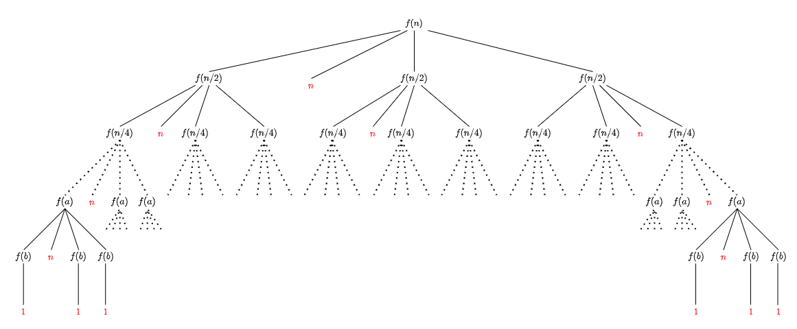
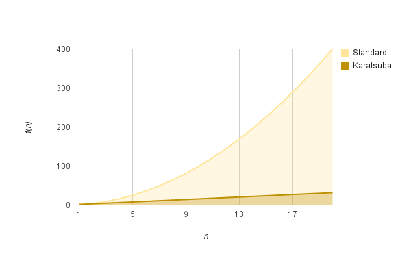

O algoritmo de Karatsuba é um algoritmo de multiplicação rápida. Ele reduz a multiplicação de dois números de \(n\) algarismos a, no máximo, \(n^{log_2 3} \approx n^{1.58}\) multiplicações de um dígito, sendo consideravelmente mais rápido e menos custoso que o algoritmo tradicional, que requer \(n^2\) multiplicações de um digito para chegar ao mesmo resultado.
Sabemos que qualquer número pode ser representado por uma soma de parte de seus digitos multiplicados por \(10^m\), sendo \(m\) a quantidade de casas decimais que faltam para que a primeira parte do número chegue na sua casa decimal inicial (\(x = x_1 10^m + x_0\) ou \(1234 = 12 \times 10^2 + 34\)). Então se multiplicamos dois números decompostos dessa maneira, obtemos:
Esse método requer quatro multiplicações, porém Karatsuba percebeu que esse número pode ser reduzido para três, uma vez que \(z_1\) pode ser representado da seguinte forma:
\[z_1 = (x_0 + x_1)(y_1 + y_0) - z_2 - z_0\]
Para entender melhor o Algoritmo de Karatsuba, o jeito mais simples é fazendo as contas na mão e verificando se o resultado bate com o esperado.
Pegue uma calculadora e vamos lá, começaremos com algo simples.
Exercício 1
Primeiro, faça a seguinte multiplicalção: \(34 \times 17 = \,?\)
Gabarito
Você deve ter chegado em \(578\), se não, tem algo de errado com a sua calculadora…
Maravilha, agora anote esse resultado em algum lugar para fazermos o algoritmo.
Karatsuba 1
A primeira coisa a se fazer é dividir os números \(34 \text{ e } 17\) em duas partes cada:
Primeiro número em duas partes que chamaremos de \(a \text{ e } b\);
Segundo número em duas partes que chamaremos de \(c \text{ e } d\).
Gabarito
\(a = 3\)
\(b = 4\)
\(c = 1\)
\(d = 7\)
Como vimos agora pouco, o resultado final dessa multiplicação pode ser escrito como \((3 \times 1)10^2 + (3 \times 7 + 4 \times 1)10^1 + (4 \times 7)\) (perceba que o \(m\) nesse caso é 1, pois dividimos os números em duas partes, ou seja, \(m = n/2\)), mas vamos seguir os passos para chegar em uma conta com só três multiplicações, seu computador agradece.
Karatsuba 2
Agora, calcule \(P \text{ e } S\), que são respectivamente: \(a \times c \; \; e \; \; b \times d\);
Gabarito
\(P: \; 3 \times 1 = \; 3\)
\(S: \; 4 \times 7 = \; 28\)
É agora que vem o pulo do gato! Queremos chegar em \((a \times d) + (b \times c)\) só que sem essas duas multiplicações, então faça o seguinte:
Karatsuba 3
Calcule \(\; T \, = \; (a + b) \times (c + d)\).
Gabarito
\(T \,\): \(\; (3 + 4) \times (1 + 7) = \; 56\)
Agora, pra chegar em \((ad + bc)\) é simples! O truque é o seguinte, iremos subtrair os termos \(P\text{ e }S\) de \(T\). Esse passo elimina uma das multiplicações que seriam necessarias inicialmente.
Karatsuba 4
Faça o cálculo: \(\; T - S - P\) e chame o resultado de \(Q\).
Gabarito
\(Q \,\): \(\; T - S - P = \; 25\)
Agora já estamos com a faca e o queijo na mão, é só partir pro abraço. Lembra daquela equação final que vimos antes, pode aplicar.
Karatsuba 5
Realize a seguinte equação e verifique se os resultados batem.
Você deve ter chegado em:
\[R: \; 3 \times 10^2 + 25 \times 10^{1} + 28 = \; 578\]
Relembrando, o motivo de multiplicarmos \(P\text{ por } 10^n\) é para deslocarmos o número para seu local ideal, o mesmo é feito com \(Q\times 10^{n/2}\).
Agora você deve estar pensando “esse método é inútil… faço muito mais rápido na calculadora”, mas não é exatamente assim que seu computador pensa! Antes de entender porque o algoritmo de karatsuba é mais rápido no computador precisamos analisar como ele seria construido em código.
Veja o pseudocódigo a seguir e analise-o:
def karatsuba(num1, num2):
# Retorna a multiplicação caso o n seja menor que 1
if (num1 < 10) or (num2 < 10)
return num1 × num2
# Calcula o tamanho dos números.
n = min(size_base10(num1), size_base10(num2))
# Pega o menor número de algarismos e divide por 2
n2 = floor(n / 2)
# Separa os números em duas partes.
a, b = split_at(num1, n2)
c, d = split_at(num2, n2)
# 3 chamas recursivas feitas para números de aproximadamente metade do tamanho (n/2).
S = karatsuba(b, d)
Q = karatsuba((b + a), (d + c))
P = karatsuba(a, c)
return (P × 10**(n2 × 2)) + ((Q - P - S) × 10**n2) + S
“Tá… continuo achando esse processo todo inútil, olha quanta linha pra fazer uma multiplicação comum!”. Realmente ainda parece improvável que esse método seja mais rápido que uma multiplicação comum, mas não vá tirando conclusões precipitadas, ainda nem calculamos a complexidade do algoritmo!
Calculando a complexidade
Bom, agora só nos resta chegar a complexidade final, para isso, utilizaremos nosso conhecimento adquirido em aula.
Complexidade 1
Vamos começar escrevendo a recorrência de nosso pseudocódigo e construindo sua árvore.
Dica
São três chamadas recursivas que recebem \(\frac{n}{2}\) como parâmetro.
Gabarito
\[f(n) =
\begin{cases}
1 & \quad \text{se } n \leq 1\text{;}\\
3f(n/2) + n & \quad \text{se } n > 1\text{.}\
\end{cases}
\]

Lembrando um pouco do passo a passo da receita que vimos na Aula 6. Ao partirmos da raiz, quando descemos \(h-2\) andares, chegamos em \(f(a)\) tal que \(a>1\), por estarmos no último andar antes da base.
Agora, com isso em mente, resolva o próximo exercício.
Complexidade 2
Calcule o limitante para a altura e a “soma de vermelhos” (parte não-recursiva das expansões) de cada andar.
Atenção
Não é necessário simplificar a soma, por enquanto.
Olha só, chegamos em \(O(n^{1.584})\), e ai, agora você acredita que karatsuba consome menos tempo que uma multiplicação comum? Se ainda tem suas dúvidas, olhe este gráfico o comparando com a multiplicação tradicional.

Desafio Hardcore
Faça a seguinte multiplicalção utilizando o algoritmo: \(3408 \times 1735 = \,?\)